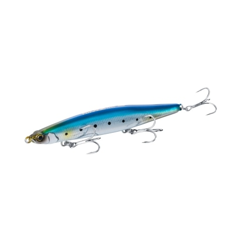

SHIMANO（シマノ）リールの技術で知られる、大阪・堺の総合メーカー
1921年に大阪府堺市で創業。自転車部品と並ぶもう1つの柱が釣具で、リール・ロッド・ルアー・ウェアまで幅広く手がけています。2026年10月にはジャッカルを完全子会社化しました。特徴、そして人気のルアーをまとめました。
基本データ
| 会社名 | 株式会社シマノ（SHIMANO） |
|---|---|
| 本社 | 大阪府堺市 |
| 創業 | 1921年（島野鐵工所として） |
| 主な事業 | 自転車部品、釣具 |
| 釣具事業 | 1970年代はじめに参入 |
| 得意ジャンル | リール・ロッド・ルアー・ウェアなど釣具全般 |
| グループ会社 | 株式会社ジャッカル（2026年10月27日に全株式を取得） |
| 公式（釣具） | fish.shimano.com |
※代表者・製品ラインナップは変わることがあります。最新情報は公式サイトでご確認ください。
SHIMANOの3つの特徴
1自転車部品から生まれた技術
1921年に堺市で島野鐵工所として創業し、自転車のフリーホイールの製造から始まった会社です。精密な部品をつくる技術が、釣具、とくにリールづくりにも生かされています。
2リールからルアーまでそろう総合メーカー
リール・ロッド・ルアー・ウェア・小物まで、釣具を一式そろえられます。ルアーでは、飛距離を伸ばす重心移動システム「ジェットブースト」を搭載したモデルが多いのが特徴です。
3ジャッカルを完全子会社化
2010年から業務提携していたジャッカルの全株式を、2026年10月27日に取得しました。シマノは「同社が大切にしてきたものづくりを尊重」し、両社の強みを生かした製品を届けると発表しています。
グループのルアーメーカー
2026年10月27日、シマノはルアーメーカーのジャッカルの全株式を取得し、完全子会社にしました。
JACKALL（ジャッカル）
2026年10月からシマノの完全子会社1999年に滋賀県大津市で設立されたルアーメーカー。TNバイブレーションやソウルシャッドなどバス釣りの定番に加え、ビッグバッカーなどソルトのルアーも出しています。2010年からシマノと業務提携していました。
SHIMANOの人気ルアー
シマノのルアーは、シーバスからサワラ・青物、ヒラメ・マゴチ、アオリイカまで、ショアのソルトゲームを中心に幅広くそろっています。
シーバス

モニカシャローランナー
ジェットブーストで飛距離を伸ばしたシャローランナー。100Fは水面直下0〜10cmを攻める飛距離特化モデル、125Fは平均61mの飛距離とドリフト性能を持つモデルです。
👉 詳しくは モニカ100Fの解説記事／モニカ125Fの解説記事 へ

ヒカゲ125S ジェットブーストヘビーシンキングペンシル
ラフな状況や高い足場にも強いヘビーシンキングペンシル。シーバスのほか、フラットフィッシュや青物にも使えます。
👉 詳しくは ヒカゲ125Sの解説記事 へ

ワイゾン111Sリップ付きシンキングペンシル
秋の大型ベイトと速い流れを攻略する、リップ付きのシンキングペンシル。
👉 詳しくは ワイゾン111Sの解説記事 へ

オセロスペンシルペンシルベイト
5つのアクションを出せるペンシルベイト。85Fは一口サイズのバーサタイルモデル、130Fは強度4Xのフックを搭載したヘビーデューティーモデルです。
👉 詳しくは オセロスペンシル85Fの解説記事／オセロスペンシル130Fの解説記事 へ
サワラ・青物

ボルゾイSW160Sビッグベイトミノー
大型ベイトのパターンで、シーバス・サワラ・青物を狙う160mmのシンキングミノー。
👉 詳しくは ボルゾイSW160Sの解説記事 へ

MDラウドジャーク120Sジャークベイト
3mレンジを攻める、11ボールウェイトのソルトウォーター専用ミッドダイバー。
👉 詳しくは MDラウドジャーク120Sの解説記事 へ
ヒラメ・マゴチ

熱砂 ウィングビーム80HSヘビーシンキングペンシル
サーフ向けブランド「熱砂」のヘビーシンキングペンシル。100mクラスの飛距離で、ヒラメ・マゴチを狙えます。
👉 詳しくは ウィングビーム80HSの解説記事 へ
エギング

クリンチ カエル跳びアッパーエギ
左右に加えて上方向へ跳ぶ「カエル跳び」の立体ダートで、アオリイカに抱かせるエギ。
👉 詳しくは クリンチ カエル跳びアッパーの解説記事 へ
※スペックは代表的なサイズです。リニューアル等で変わる場合があります。
画像出典:SHIMANO公式HP
SHIMANOのリール
シマノはリールでも知られるメーカーです。スピニングリールでは「ステラ」「ヴァンキッシュ」「ツインパワー」などのシリーズがあります。tsuri-boonでは、リールの個別記事は準備中です。
最初の1つの選び方
- シーバスでまず1つ → モニカ125F
- 風や波のある日 → ヒカゲ125S ジェットブースト
- 水面で誘いたい → オセロスペンシル85F
- サーフのヒラメ → 熱砂 ウィングビーム80HS
- アオリイカ → クリンチ カエル跳びアッパー
よくある質問
シマノはどこのメーカー？
大阪府堺市に本社を置く株式会社シマノです。1921年に島野鐵工所として創業し、自転車部品と釣具を2本の柱にしています。
ジャッカルとの関係は？
2026年10月27日に、シマノがジャッカルの全株式を取得し、完全子会社にしました。両社は2010年から業務提携していました。買収金額は公表されていません。
ジェットブーストとは？
シマノのルアーに搭載されている、飛距離を伸ばすための重心移動のしくみです。モニカやヒカゲなどに搭載されています。